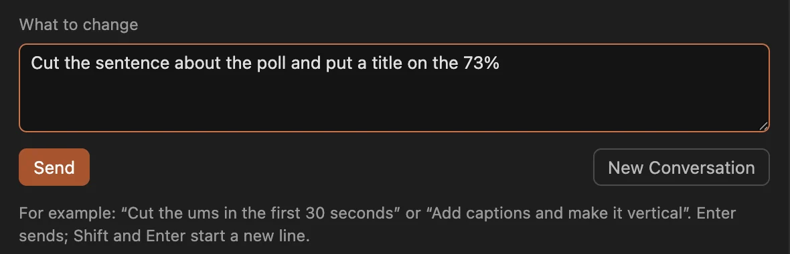

Assistant
Tell the Assistant what to change, in your own words, and it does it with the app's own tools, step by step, where you can see it.

Ask
Type under What to change and press Enter (⇧ Enter starts a new line). For example:
- “Cut the ums in the first 30 seconds.”
- “Add captions and make it vertical.”
- “Hide the camera from 3:00 to the end.”
- “Put a lower third with my name at the start.”
Each step it takes is listed as it goes. Stop ends it; the steps above are done. New Conversation starts again.
When it asks you
Some steps wait for your OK, and the list says why: a heavy job, a step that sends data off this computer, one that cannot be undone, one that changes the whole project, or a blur where you choose what it hides. Press Run, Choose in the Window or Cancel.
Undo
Undo this request takes back everything one request did, if nothing else was edited after it. Each change is also a step in History, and shows in What the AI just did with its own Undo.
The Assistant needs an AI model (How Kilnframe uses AI). Assistants outside the app, such as Claude or ChatGPT, can do the same through MCP (Connect AI assistants).